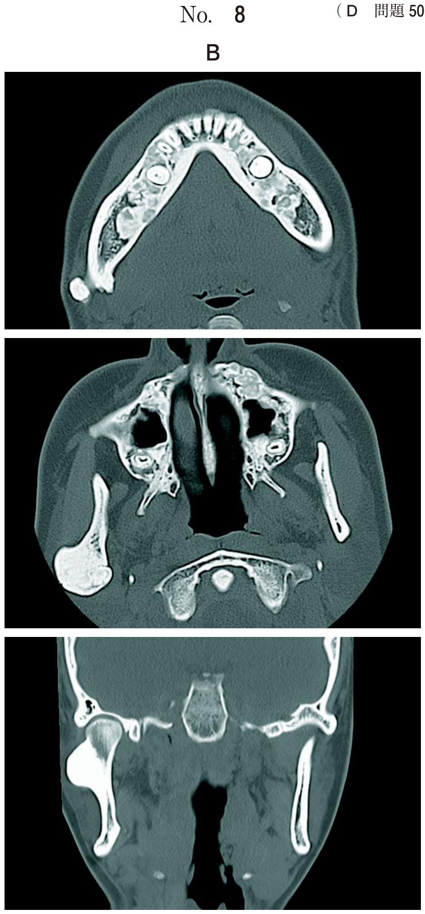

フラップ手術（flap surgery）とは、歯周病変部の歯根面や歯槽骨欠損部の視野の確保ならびに器具の到達性を容易にするために骨膜を含んだ全層弁、または部分層弁を形成・翻転後、原因因子および病変の除去、あるいは改善などを図る歯周外科治療である。
非外科的歯周治療では除去困難な深い歯周ポケットがある部位からの細菌や病変部の除去が可能であり、歯周外科治療の基本テクニックである。根分岐部病変の治療、骨移植術、GTR法や歯周形成手術の習得にも不可欠。
| 種類 | 構成 | 歯槽骨 |
|---|---|---|
| 全層弁（粘膜骨膜弁） | 骨膜を含む | 露出する |
| 部分層弁（粘膜弁） | 骨膜を含まない | 露出しない |
| 種類 | 切開法 |
|---|---|
| エンベロップフラップ | 水平切開のみで封筒状に翻転 |
| 三角（トライアンギュラー）フラップ | 水平切開＋片側に縦切開 |
| フルフラップ | 水平切開＋両側に縦切開 |
| 位置 | 目的・適応 |
|---|---|
| 元の位置 | 通常のフラップ手術 |
| 歯冠側 | 露出歯根面の被覆（十分な角化歯肉幅が必要） |
| 根尖側 | 付着歯肉幅の増加、ポケット除去（角化歯肉幅が狭くても可能） |
| 側方 | 露出歯根面の被覆、付着歯肉幅の増加 |
浸潤麻酔 → 切開 → 剥離 → 肉芽除去 → SRP → 縫合
| 順序 | 手技 | ポイント |
|---|---|---|
| 1 | 口腔内清拭・消毒・麻酔 | 術前のプラークコントロール徹底 |
| 2 | プロービング | ポケットデプスの測定 |
| 3 | 切開 | 内斜切開（2mm以上のポケット）または歯肉溝内切開 |
| 4 | フラップの剥離・翻転 | 全層弁を必要最小限の範囲で剥離 |
| 5 | 切除歯肉片の除去 | 二次切開でポケット部歯肉を遊離 |
| 6 | 肉芽組織の除去 | 骨欠損底部の郭清を十分に |
| 7 | SRP | 直視下で残存歯石・病的セメント質を除去 |
| 8 | （必要時）骨整形・骨切除 | 形態異常や浅い骨欠損の処置 |
| 9 | 洗浄・フラップ内面処置 | 一次創傷治癒を得るため緊密な接触を確認 |
| 10 | 縫合（歯周パック） | 死腔を避け創傷治癒を促進 |
Widman改良フラップ手術は、最小の外科的侵襲で最大の治療効果を得ることを目的とした術式。フラップの剥離は根尖方向1〜2mm程度とし、歯槽骨欠損部は郭清のみにとどめ、可及的に歯槽骨の温存を図る。術後の不快症状が少なく、審美的にも優れている。
注意：フラップ手術は創面を縫合するため露出しない。以下の術式は創面が露出する。
歯肉切除術は骨縁下ポケットに適応できない（歯槽骨頂より根尖側の病変にアクセスできないため）
最も侵襲が小さいのは歯周ポケット掻爬術（切開・剥離を行わない）
| 器具 | 用途 |
|---|---|
| 替刃メス（#11, 12, 15など） | 切開 |
| 歯肉剥離子（オルバンメス、カークランドメスなど） | フラップの剥離 |
| キュレット型スケーラー | 肉芽除去、SRP |
| 骨ノミ・骨ヤスリ | 骨整形術 |
| 縫合針・縫合糸 | 縫合 |
フラップ手術の治療過程を示す。
浸潤麻酔 → ① → ② → ③ → ④ → ⑤ →縫合
④に入るのはどれか。1つ選べ。ただし、①〜⑤はa〜eのいずれかに該当する。
【解説】フラップ手術の順序は「浸潤麻酔→切開→剥離→肉芽除去→SRP→縫合」。④に入るのは肉芽除去。ボーンサウンディングは術前の診査で行う。
フラップ手術に使用する器具の写真（別冊No.13）を別に示す。
使用順序で正しいのはどれか。1つ選べ。

【解説】器具の使用順序は術式の流れに対応。ウ（メス：切開）→ア（剥離子：剥離）→オ（キュレット：肉芽除去・SRP）→イ（縫合針：縫合）→エ（はさみ：糸切断）の順。
骨縁下ポケットに適応できないのはどれか。1つ選べ。
【解説】歯肉切除術は骨縁下ポケットに適応できない。歯槽骨頂より根尖側の病変にはアクセスできないため。GTR法、エナメルマトリックスタンパク質、Widman改良フラップ手術は骨縁下ポケットに適応可能。
術後に創面が露出する歯周外科治療はどれか。2つ選べ。
【解説】遊離歯肉移植術は口蓋の採取部が露出。歯肉弁側方移動術は供給側の創面が露出。フラップ手術やENAP、GTR法は縫合により創面を閉鎖する。
付着歯肉幅が減少するリスクが高いのはどれか。2つ選べ。
【解説】歯肉切除術は角化歯肉を切除するため付着歯肉幅が減少。歯肉弁歯冠側移動術は歯肉を歯冠側に移動させるため、歯肉歯槽粘膜境（MGJ）の位置は変わらず付着歯肉幅が減少する。
外科的侵襲が最も小さい歯周外科手術はどれか。1つ選べ。
【解説】歯周ポケット掻爬術は切開・剥離を行わず、キュレットでポケット内壁を掻爬するのみのため、最も侵襲が小さい。